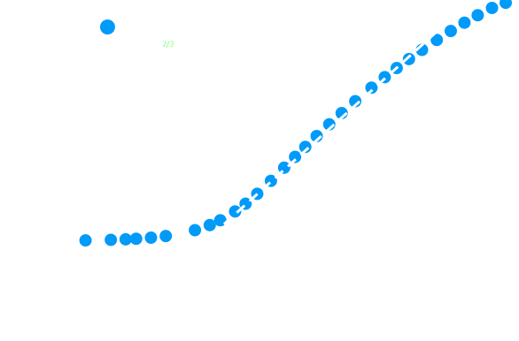
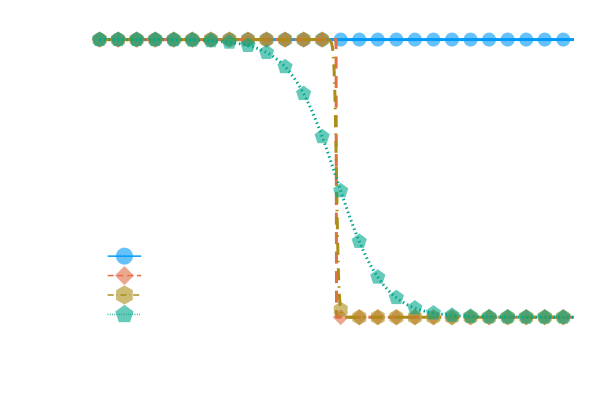
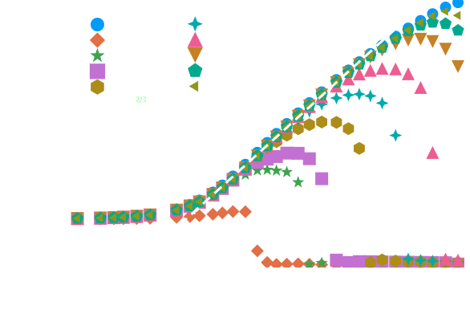
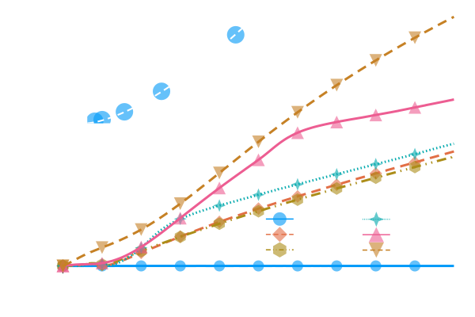

Stefan Zitz*, Tilman Richter, Konstantinos Missios and Johan Roenby
“Weeks of coding have saved me hours of thinking.”
\[\partial_t h + \nabla \cdot (h \mathbf{u}) = 0\\ \mathbf{u} \approx \frac{1}{\nu \alpha(h)}\left(-gh \nabla h -\frac{1}{\rho_0}h\nabla p + \color{tomato}{\mathbf{F}}\right) \\ \partial_t h \approx \nabla \cdot \left(\frac{h^3}{3\mu}\nabla \color{tomato}{p}\right)\] S. Zitz et al., JOSS, 7(77) 2022, S. Zitz et al., PRE, 100(3) 2019
“Ideas can be implemented and tested quickly with a two dimensional system....”
\[F_{\gamma} = \frac{3}{2}\partial_x\gamma\]
\[p = \gamma\partial_x^2 h + \Pi(h)\]
\[\Pi(h) = K(\theta,\gamma)f(h)\]
S. Zitz et al., arXiv, 2022
R. Borcia & M. Bestehorn, Langmuir, 29(14) 2013

\[ p_c \sim \gamma\kappa \\ p_i \sim \rho (h_0/t)^2 \\ h_0 \sim t^{2/3} \] \[\tau = \sqrt{\rho R_0^3/\gamma}\]
A. Eddi et al., PRL, 111(14) 2013

R. Borcia & M. Bestehorn, Langmuir, 29(14) 2013


\[\gamma/\mu \sim h_0/(2\mu)\partial_x\gamma \\ h_0 \sim \gamma/(2\partial_x\gamma)\\ \tau_s^{2/3} \sim \gamma/(2\partial_x\gamma)\\ \tau_s \sim (\partial_x\gamma)^{-3/2}\]
S. Zitz et al., arXiv, 2022